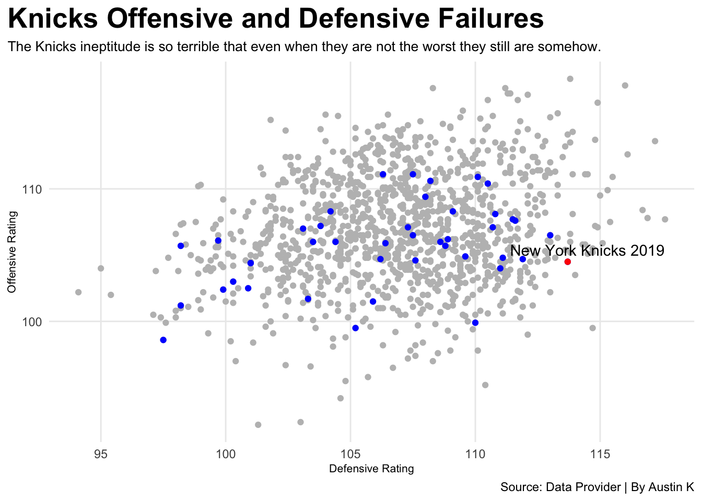

Code
library(tidyverse)
library(ggrepel)
library(gt)
Knicks <- read_csv("NBA.csv")
OffRtg <- Knicks %>%
filter(season == 2019)%>% filter(team == "New York Knicks") %>% mutate(TeamSeason = paste(team, season))
NYK <- Knicks %>% filter(team == "New York Knicks")
ggplot() +
geom_point(data=Knicks, aes(x=d_rtg, y=o_rtg), color="grey") +
geom_point(data=NYK, aes(x=d_rtg, y=o_rtg), color="blue") +
geom_point(data=OffRtg, aes(x=d_rtg, y=o_rtg), color="red") +
geom_text_repel(data=OffRtg, aes(x=d_rtg, y=o_rtg, label=TeamSeason)) +
labs(
x="Defensive Rating",
y="Offensive Rating",
title="Knicks Offensive and Defensive Failures",
subtitle="The Knicks ineptitude is so terrible that even when they are not the worst they still are somehow.",
caption="Source: Data Provider | By Austin K"
) +
theme_minimal() +
theme(
plot.title = element_text(size = 20, face = "bold"),
axis.title = element_text(size = 8),
plot.subtitle = element_text(size=10),
panel.grid.minor = element_blank(),
plot.title.position = "plot"
) 